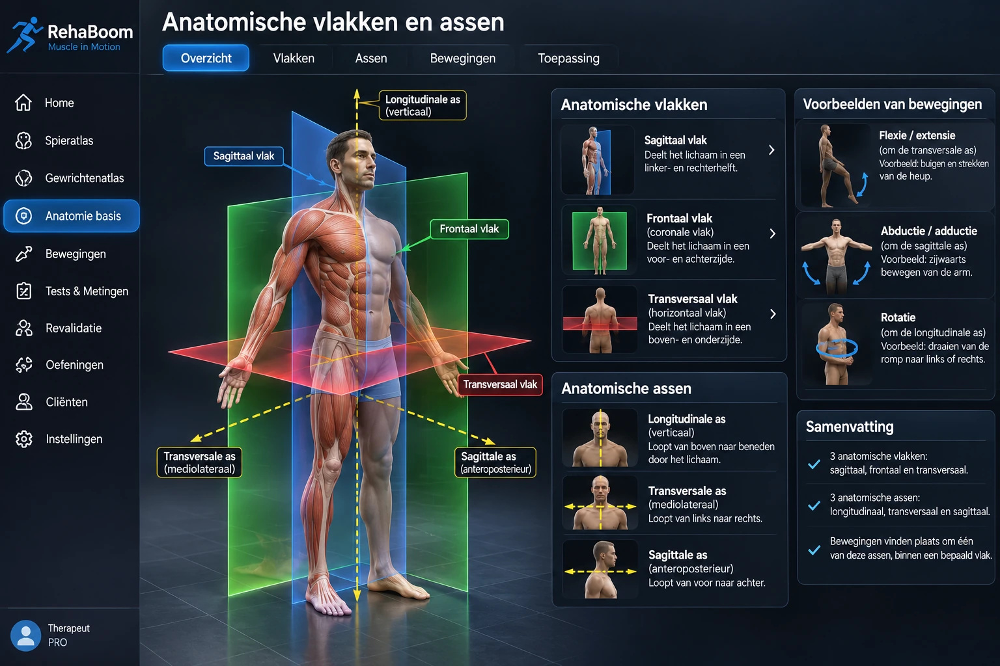

Gewricht
Kies een gewricht. Ontdek het gewrichtstype, ligamenten en spieraanhechtingen in de atlas, of bekijk per vlak welke spieren bewegen.
Regio
Anatomisch vlak
Tik op een spier voor oorsprong, aanhechting, functie en alle bewegingen waarin hij een rol speelt.
Normale ROM: AAOS-referentiewaarden (actief, neutrale-0-methode), via Physiopedia; wervelkolom: referentiegrenzen US Department of Veterans Affairs. Dit zijn referentiewaarden, geen populatiegemiddelden; leeftijd, geslacht en meetmethode beïnvloeden ze. Eindgevoel: normaal eindgevoel volgens Cyriax/Magee.
Anatomische vlakken en assen
Een rotatie vindt plaats rond een as loodrecht op het bewegingsvlak. Per gewricht zie je ook glijbewegingen en bewegingen die meerdere vlakken combineren.
Het lichaamsmodel wordt geladen…
Bekijk de originele afbeelding

Open de afbeelding op volledig formaat ↗Bronnen · OpenStax · University of Oklahoma Health Sciences
Versiegeschiedenis
v4.16: herstel van offlinecache, brongetrouwe build, spierkaartkoppelingen en mobiele topbalk.
v4.15: tik op de gemarkeerde deltoideus in de 3D-beweging voor uitleg over het gekozen spierdeel.
v4.14: drie afzonderlijk te openen deltoideusdelen — front, side en rear delts — met eigen origo, insertie en functie.
v4.12: armen en schouders als aparte spiergroepen, met eigen selectie, zoekindeling en lichaamsicoon.
v4.11: spierfuncties gecontroleerd op alle 100 spierkaarten; verduidelijking van knie- en voetbewegingen en bijgewerkte offline bewegingsweergave.
v4.10: Functie in beweging op alle spierkaarten, met gewrichtsanimaties en detailbeelden voor vingers, duim, tenen, ribben en buikwand.
v4.9: interactieve spierfuncties op de spierkaarten van schouderblad en kuit.
v4.8: spierbeelden hersteld, afzonderlijke spierdelen voorzien van het juiste bronbeeld en posteruitsneden gecorrigeerd.
v4.7: gewrichtstype en uitleg bij elke gewrichtskeuze.
v4.6: losse anatomiebeelden, individuele vlakken en bewegingspatronen per gewricht en as.
v4.5: interactieve les Vlakken en assen met een draaibaar 3D-model en bewegingsvoorbeelden.
v4.4: tabblad Vlakken en assen met anatomische afbeelding, uitleg en bewegingsvoorbeelden.
v4.0: cliëntdashboard, programmabouwer, trainingsregistratie, evaluaties, versleuteld cliëntportaal, oefendemonstraties en bewegingsleermodel.
v3.9: uniforme beeldpresentatie, anatomie/beweging/toepassing, compacte oefeningen, directe deellinks en privécollecties met apparaatsynchronisatie.
v3.8: aparte indeling voor mobiel en pc, duidelijkere cliëntmodus, Nederlandse structuurnamen en behoud van de selectie bij omschakelen.
v3.7.1: realistische 3D-botillustraties in de interactieve gewrichtenatlas; bestaande lagen en structuurinformatie behouden.
v3.7: lokale stilstaande spierbeelden, gerichte rotatiebediening, opgeslagen spieren/oefeningen en een kwalitatieve simulator.
v3.6 Premium: grote anatomische spiergalerijen bij bewegingen en oefeningen, gewrichtsatlas, optionele rolkaarten, donker thema en herstelde offline installatie.
- Spieratlas: bronbeelden hersteld en functies per spierdeel uitgebreid. De vasti en vingerbuigers hebben afzonderlijke kaarten.
- v3.5: anatomische atlasbeelden met vergroting en bronvermelding voor alle negen regio’s; interactieve lagen apart te openen.
- v3.4: gewrichtsatlas voor alle negen regio’s: gewrichtstype, schematische detailtekeningen, schakelbare lagen, ligamenten en spieraanhechtingen met bronlinks.
- v3.3: oefeningen toegevoegd: reverse lunge, sumo squat en sissy squat.
- v3.2: oefeningen toegevoegd: Bulgarian split squat, Arnold press en incline biceps curl; lateral raise vindbaar als side raise.
- v3.2: spieranalyse per oefening verfijnd: rugstrekkers als één spier, geen dubbele rotator cuff, hamstrings en kuit bij squat en lunge als ondersteunend, en "positie" voor houdingen zonder spierwerk.
- v3.1: eigen anatomische icoontjes per spiergroep en per oefeningcategorie, getekend uit de lichaamskaart.
- v3.0: nieuw ontwerp: onderbalk met iconen voor duimbediening, grote paginatitels, gewrichtstegels met silhouet, lichtbak voor spierafbeeldingen en rustigere typografie.
- v2.8: realistische 3D-renders (Anatomography/BodyParts3D) bij 54 van de 91 spieren; de render is nu het hoofdbeeld van de spierkaart.
- v2.8: strook met afbeeldingen van de agonisten op elke bewegingskaart en van de hoofdspieren bij elke oefening.
- v2.7: normale bewegingsuitslag (AAOS) en normaal eindgevoel op elke bewegingskaart.
- v2.7: 9 nieuwe tests: Spurling, cervicale distractie en Deep Neck Flexor Endurance (nek); SLR, Slump en Biering-Sørensen (rug); anterior drawer, talar tilt en Thompson (enkel).
- v2.7: groepschips zoals "rotator cuff" en "buikwand" openen een groepskaart met lichaamskaart en de losse spieren.
- v2.6: terug naar 4 tabs; de insufficiëntie-simulator zit nu onder Spieren, bij de spierkaarten van twee-gewrichtsspieren en bij oefeningen.
- v2.6: knop "Alles opslaan" (tab Spieren) zet alle spierafbeeldingen op je telefoon voor gebruik zonder bereik.
- v2.5: afbeeldingen nagelopen via de Wikimedia-beschrijvingen; 6 inhoudelijk foute plaatjes vervangen (o.a. latissimus, rechte en schuine buikspier, intercostales, adductor longus).
- v2.5: eigen afbeelding voor serratus anterior, pectoralis minor, adductor brevis, gracilis, pectineus en peroneus tertius: alle 91 spieren hebben nu een plaatje.
- v2.5: juiste bronvermelding en licentie per afbeelding, met link naar de bron. Verkleinde versies: animaties kosten geen 15 MB data meer.
- v2.4: eigen lichaamskaart (voor- en achterzijde) waarop elke spier wordt ingekleurd; diepe spieren gestippeld.
- v2.4: lichaamskaart op elke bewegingskaart (agonist, synergist, stabilisator) en bij elke oefening.
- v2.4: tik op een afbeelding of kaart om hem schermvullend te bekijken en in te zoomen.
- v2.3: tab "Oefeningen": 22 oefeningen met gewrichtsacties, hoofd-, ondersteunende en stabiliserende spieren, kinesiologisch inzicht en coachingcue.
- v2.3: vezelarchitectuur (parallel, spoelvormig, convergent, uni-, bi-, multipennaat) bij 44 spieren met een eenduidige indeling.
- v2.3: cliëntweergave met volksnamen en eenvoudige uitleg voor alle 91 spieren.
- v2.2: nek, schoudergordel en romp & wervelkolom toegevoegd; alle 91 spieren hebben nu een rol in een beweging.
- v2.2: regio-tegels (bovenste extremiteit, romp & nek, onderste extremiteit) en een mannequin per vlak en as.
- v2.2: voet volgens de Nederlandse conventie: supinatie/pronatie = kanteling, inversie/eversie = combinatiebeweging.
- v2.2: M/B/P geteld per gekruist gewricht: M. Soleus = B (boven- en onderste spronggewricht), M. Gastrocnemius = P.
- v2.2: spierkaart voor M. Peroneus Tertius.
- v2.1: tab "Spieren" terug: 8 spiergroepen, zoeken op naam, oorsprong, aanhechting en functie, met afbeelding en lichaamslocatie.
- v2.1: tab "Testen" terug: 9 orthopedische tests met Physiotutors-links.
- Nieuw: antagonisten per beweging, met een knop naar de tegenbeweging.
- Nieuw: stabilisatoren (fixatoren) als aparte rol.
- Nieuw: M/B/P-badge op elke spier en een spieroverzicht over alle gewrichten.
- Nieuw: insufficiëntie-simulator met lengte-spanningscurve.
- Fix: caput breve van de biceps femoris weg bij heupextensie, toegevoegd bij knieflexie.
- Fix: "Horizontale abductie" heeft geen synoniem "retroflexie" meer.
- Fix: onderbeenspieren naar de voet zijn poly-articulair (boven- en onderste spronggewricht).
- Fix: M. Iliopsoas gesplitst in M. Iliacus (M) en M. Psoas Major (P); sartorius in plaats van iliopsoas bij heup-exorotatie.
- Fix: typfouten en Engelse termen uit de data verwijderd.
Prototype. Laat de inhoud door een fysiotherapeut reviewen voor klinisch gebruik.
Spieren
Spierkaarten met ligging, oorsprong, aanhechting, functie en de bewegingen waarin ze meedoen. Een 3D-rotatie toont de ligging; het is geen demonstratie van de oefening.
Spiergroep
Controleren welke afbeeldingen al op dit toestel staan…
Afbeeldingen via Wikimedia Commons: Gray's Anatomy (publiek domein), Anatomography (CC BY-SA 2.1 JP) en enkele bewerkingen (CC BY-SA 3.0), plus DrJanaOfficial (CC BY-SA 4.0). Bron en licentie staan bij elke afbeelding.
Oefeningen
Welke spieren een oefening traint, en waarom, verklaard vanuit de gewrichten.
Spieren zijn afgeleid uit de bewegingskaarten van de gewrichtentab. Tik op een gewrichtsactie om die kaart te openen.
Testen
Screeningstests per regio: uitvoering, wanneer positief, en welke spieren betrokken zijn.
Gewricht
Screeningstests, geen diagnose. Een positieve test is een reden om door te verwijzen of verder te onderzoeken.
Twee-gewrichtsspier
Niet op schaal. De groene zone markeert het middengebied van dit leermodel; dit is geen gemeten optimale lengte of trainingszone voor een persoon.